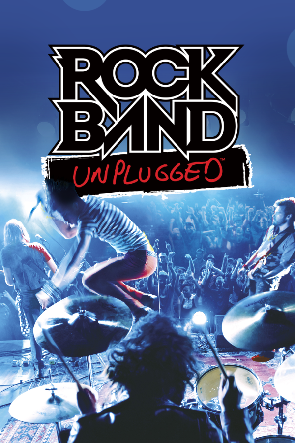

|  | |
| Playtime | Not Played |
| Last Activity | Never |
| Added | 4/29/2025 5:00:18 |
| Modified | 4/29/2025 8:36:20 |
| Completion Status | Not Played |
| Library | Playnite |
| Source | |
| Platform | Sony PlayStation Portable |
| Release Date | 6/9/2009 |
| Community Score | 70 |
| Critic Score | 81 |
| User Score | |
| Genre | Rhythm |
| Developer | Backbone Entertainment Harmonix |
| Publisher | MTV Games |
| Feature | Single Player |
| Links | Wikipedia Rock Band Unplugged website |
| Tag | |
Rock Band Unplugged is a 2009 rhythm game developed by Harmonix in partnership with Backbone Entertainment, published by MTV Games, and distributed by Electronic Arts for the PlayStation Portable. It is the third installment in the Rock Band series and the first to be exclusively developed for a handheld console. The game was released in North America and Europe in June 2009.
The core game is functionally similar to the note-matching gameplay of Harmonix's previous titles, Frequency and Amplitude, with the player responsible for playing all four instruments—lead and bass guitar, drums, and vocals—using the Portable's controls. Game modes are similar to Rock Band's, and the soundtrack includes a number of songs that have already been a part of the Rock Band series. Additional tracks will be a time-limited exclusive to Unplugged before they are released as downloadable content for the console games. The game supports the addition of new songs that can be purchased through the PlayStation Store.
Rock Band Unplugged, in addition to being released separately, was also released as part of a "Limited Edition Entertainment Pack" that also includes a Rock Band Unplugged-branded PSP, a 4GB memory card, and a voucher to download the movie School of Rock. A voucher for an exclusive 5-song demo of Rock Band Unplugged that is compatible with downloadable content was included with the PSP Go.
The main gameplay modes in Rock Band Unplugged are similar to that of the console versions of the game. In Tour mode, the player creates a customized band, plays sets of songs at venues around the world, earning cash and fame, and unlocking new vehicles, venues, and staff. Songs completed in Tour mode then become available in Quick Play mode, which allows any song to be played without the need to create a band.
Songs in Rock Band Unplugged feature tracks for the same four instruments as in Rock Band: lead guitar, bass guitar, drums, and vocals. During the Quick Play and Tour modes, gameplay is similar to Harmonix' previous games Frequency and Amplitude: The player presses combinations of buttons on the PSP to match notes in time with the rhythm of the currently-selected instrument. After completing a phrase without missing any notes, the instrument continues to play automatically for a set amount of time, allowing the player to switch to another instrument using the shoulder buttons. Successfully completing multiple phrases in a row builds a score multiplier, as well as allowing the song to play in its entirety. Not completing a phrase in a track for an extended period of time will drain the Crowd Meter for that instrument, eventually causing the instrument to fail. A failed track will eventually cause the entire band to fail if not saved in time.
Overdrive is handled similarly to the main Rock Band series. By hitting certain white-colored sections of notes placed throughout a song, the player fills the Energy Meter. Once the meter is at least half full, the player may press down on the D-pad or X to activate Overdrive, which revives all failed instruments and enables a temporary state that boosts the score multiplier and slows the degradation of the Crowd Meter for all instruments. During solos, the player is automatically switched to the appropriate instrument; each note is scored individually, and the phrasing and track-switching elements do not apply until the solo is over.
Two additional modes, Band Survival Mode and Warmup Mode, are included in the "Extras" section of the game. In both modes, notes are scored individually, instead of being divided into phrases. Tracks will not play automatically, causing the Crowd Meter for unselected instruments to continually drop in Band Survival Mode. In Warmup Mode, only the currently-selected track is affected by missed notes. No multiplayer mode is included in the game.
The Nintendo DS version of Rock Band 3 and Lego Rock Band feature identical gameplay to Unplugged.
Rock Band Unplugged features 41 tracks, all of them master recordings, chosen from the songs present in Rock Band 2 and those present in the main games' Music Store. The game uses the PSP's Wi-Fi capabilities to provide additional downloadable content from music providers through the PlayStation Store. Players can also download new tracks to the PSP through the PC version of the PlayStation Store. Ten songs were made available for download on the day of the game's release, and two new songs were released each week until November 19, 2009, when further DLC development was cancelled; Harmonix, while stating that Unplugged has "run through [its] planned state", has not ruled out future downloadable content but are presently focused on other Rock Band projects. There is no cross-compatibility between music libraries for Rock Band Unplugged and the console versions of Rock Band, nor any interaction with the PlayStation 3 version of either Rock Band game.
The songs included in the game are as follows:
The songs included in the Rock Band Unplugged Starter Pack are as follows:
Currently, "Toxicity", "Under the Bridge", "Back from the Dead", and "Smooth Criminal" are no longer available through the PlayStation Network store.
On March 10, 2010, Rock Band Unplugged Lite was released on the PlayStation Network, which is a downloadable version of the game. The Lite version includes the 5 Starter Pack songs, but can accept all downloadable content (DLC). The in-game Music Store enables users to download any of the original Rock Band Unplugged songs for the same price as the existing downloadable songs. Original Rock Band Unplugged songs can only be purchased through the in-game Music Store, while additional DLC songs can be purchased from either the PlayStation Store or the in-game Music Store. The lite version was removed at one point from the PlayStation store.
Rock Band Unplugged was met with generally positive reviews. The game's gameplay was praised, likening it to the success of Harmonix' previous games Frequency and Amplitude, and called a "unexpectedly nostalgic pleasure". It was further considered a general improvement on the standard Rock Band gameplay format, "adding a new level of depth for veteran players", and that by being in control of all parts of the band, the player would be more connected to their virtual band than in the console versions. Reviewers praised the use of sound, particularly the slight volume emphasis given to the current instrument that is being played, though recommended the use of headphones to overcome the poor speaker quality of the PSP unit. The choice of control scheme was also praised, which avoided introducing too many difficult button combinations on the PSP unit. The game's difficulty was also noted to be well-balanced both between songs and individual difficulty levels.
Reviewers noted that the "World Tour" mode of the game suffered the same problems that both Rock Band games had when they were first released, in that without additional content, the player would be likely playing the same song several times over as they progress through the tour. The lack of multiplayer or online leaderboards for Rock Band Unplugged was considered its largest weakness. IGN's Greg Miller lamented that unlike the social nature of Rock Band on consoles, the lack of such interaction cooperative or competitively with a second player leaves little reason to come back to the game or purchase additional content. GameSpot's Carolyn Petit, in considering the success of the multiplayer aspects of the other Rock Band titles, considered the omission "baffling". The cost of additional downloadable content, even in consideration of it being more of the same that already exists in the Rock Band series, remains the same, from $0.99 to $1.99 a song. Reviewers also criticized the need to repurchase such downloadable content for the game, with no way to reuse existing PlayStation 3 Rock Band content with the PSP game.